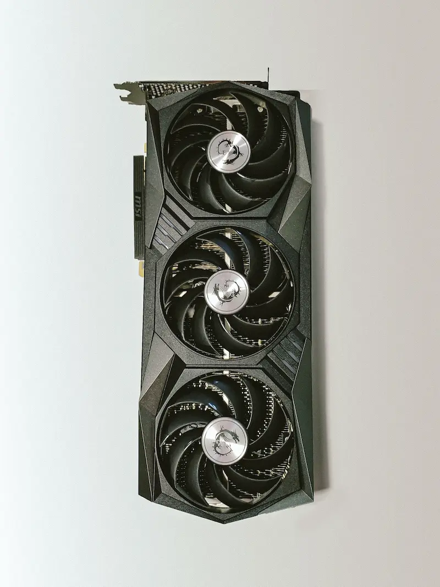
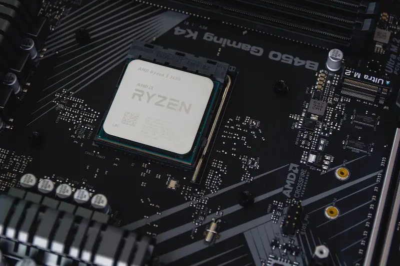
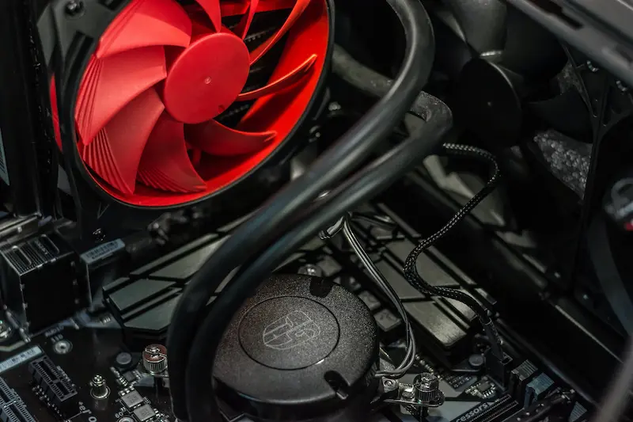
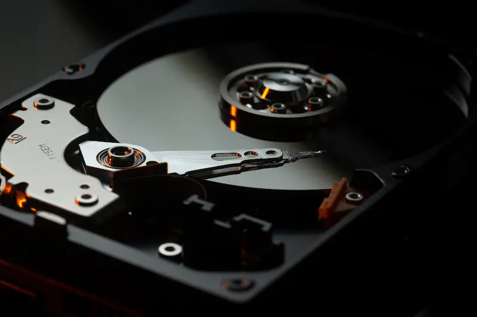
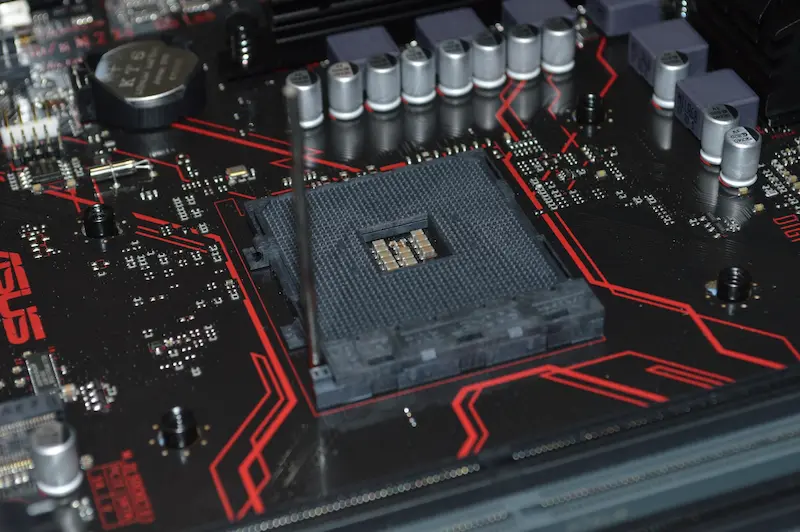

Komponenter
vigtige komponenter
CPU'en er din computers 'Central Processing Unit'. Lidt ligesom din hjerne er hos dig. Bygger du en stationær computer, vil det første, du vælger, oftest være CPU. Det skyldes, at det er afgørende for bundkort og RAM hvilken CPU, du har. I 2021 var det meget svært at skaffe en god CPU, da producenterne slet ikke kunne klare efterspørgslen. Det skyldtes både corona-logistik og "bitcoin" mining, der fik markedet til at gå næsten i stå. GPU kan du måske regne ud, hvad står for? Nemlig, 'Graphic Processing Unit'. Eller på dansk: Grafikkort. Hvis du skal spille computerspil eller redigere video, kan det være en rigtigt god idé at købe en computer med et selvstændigt grafikkort med egne dedikerede RAM. Det er store kræfter, der kræves, når grafik skal spille 100%. RAM, som vi nævnte kort under GPU, er hukommelse for computeren. Altså, hvor mange mellemregninger, den kan have i hovedet på samme tid. Hvis det giver mening. RAM er en forkortelse for 'Random Access Memory'.


køling
luftkøling
Den mest almindelige måde at køle en computer på, er luftkøling. Der sidder ganske enkelt én eller flere ventilatorer i computeren, som leder den varme luft væk og køligere luft ind. De kan larme noget så frygteligt, men i dag kan man også købe luftkølere, der næsten intet siger og alligevel løser opgaven at køle CPU og resten af computeren.
vandkøling
Skal din køling være fancy og futuristisk, er vandkøling måske et kig værd. Det handler helt kort om at bruge vand (i et lukket system) til at holde temperaturen i din computer på et fornuftigt niveau. Når det can være fancy og futuristisk, så skyldes det selvfølgelig, at det kræver pumper, rør og andet udstyr at få væsken rundt.


motherboard
Bundkortet er "pladen", du sætter din CPU, din GPU og dine RAM fast i. Det er på den måde ret afgørende, at dit motherboard dvs. dit bundkort passer til resten af din hardware. Ellers bliver det en "flaskehals".
